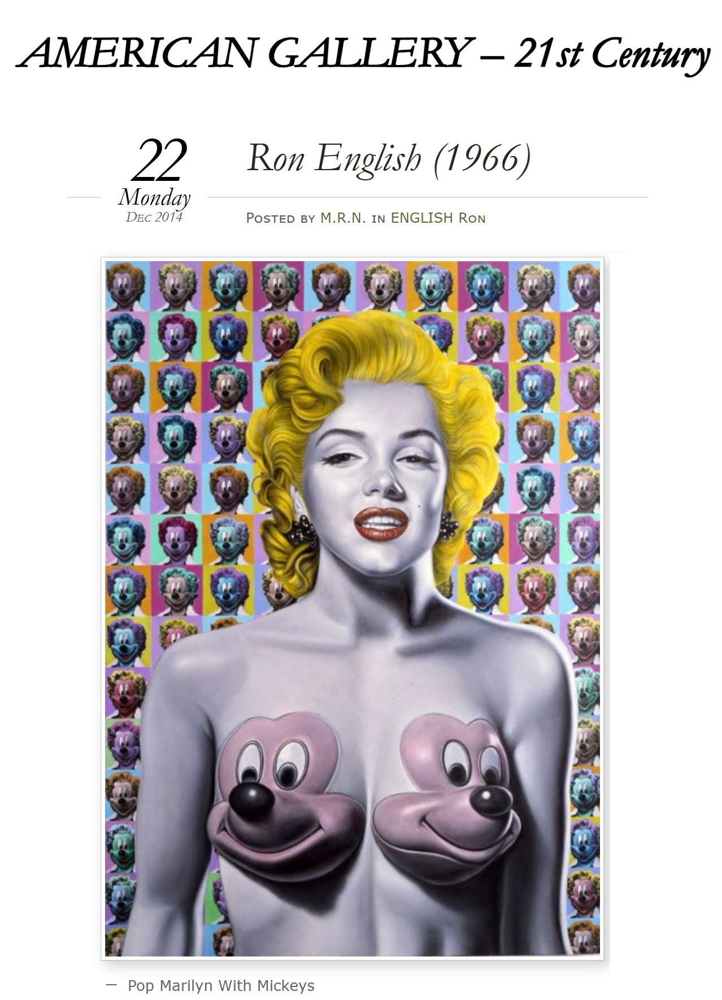

Exhibitions
Skin Deep: Post-Instinctual Afterthoughts on Psychological Portraiture, Lazarides Rathbone, London, United Kingdom, June 24–July 21, 2011.
Literature
Ron English, Death and the Eternal Forever (Korero Press, 2014), p. 158. ISBN 978-0957664920.

Ron English, Status Factory: The Art of Ron English (San Francisco: Last Gasp of San Francisco, 2014), p. 146. ISBN 978-0867197891.

Ron English, Original Grin: The Art of Ron English (Paris: Cernunnos, 2019), p. 300. ISBN 978-2374950938.

Andrew Handley, “10 Pop Culture Versions Of Famous Paintings,” Listverse, March 2, 2013. Online.
Ian Cibula; Yan Bleney, “Ron English”, New York Edition, 2015, p. 1.


Invisiblemadevisible @imv\_streetart, “Ron English — Skin Deep Exhibition”, Paper Blog, no. July, 2011.

Edd Norval, “Ron English - Always on-Brand”, Compulsive Contents, vol. 53, no. 9, 2018.


“DU POP ART À LA POPAGANDA”, GRAFFITI ART, no. 28, January - February - March, 2016, p. 60.

“POPaganda with Ron English”, Don't Panic, no. December, 2008.

Vandalog studio coverage.

candicepoka, “POP ART”, Look On The Bright Side, May 1, 2013.

“POPaganda, art and crimes!”, Chicquero, December 6, 2011.

Notes
This work appears on Artsy’s show page for Skin Deep: Post-Instinctual Afterthoughts on Psychological Portraiture, presented by Lazinc.
This composition was later adapted by the artist as a related archival pigment print with gloss varnish on Somerset Enhanced Satin 330gsm paper. The Artsy listing describes Pop Marilyn Mickeys as signed and numbered in pencil from an edition of 50, published by Lazarides, with sheet size 70 × 50 cm.
The composition was used in advertisement material for the Skin Deep exhibition and also appears in studio photographs published by Vandalog in June 2011.
The work also appears in selected online articles, image posts, and print-related listings.
Ancillary Documentation



Selected Online Circulation
Selected online documentation related to this work, its source references, related print documentation, and later circulation. This list is not exhaustive.